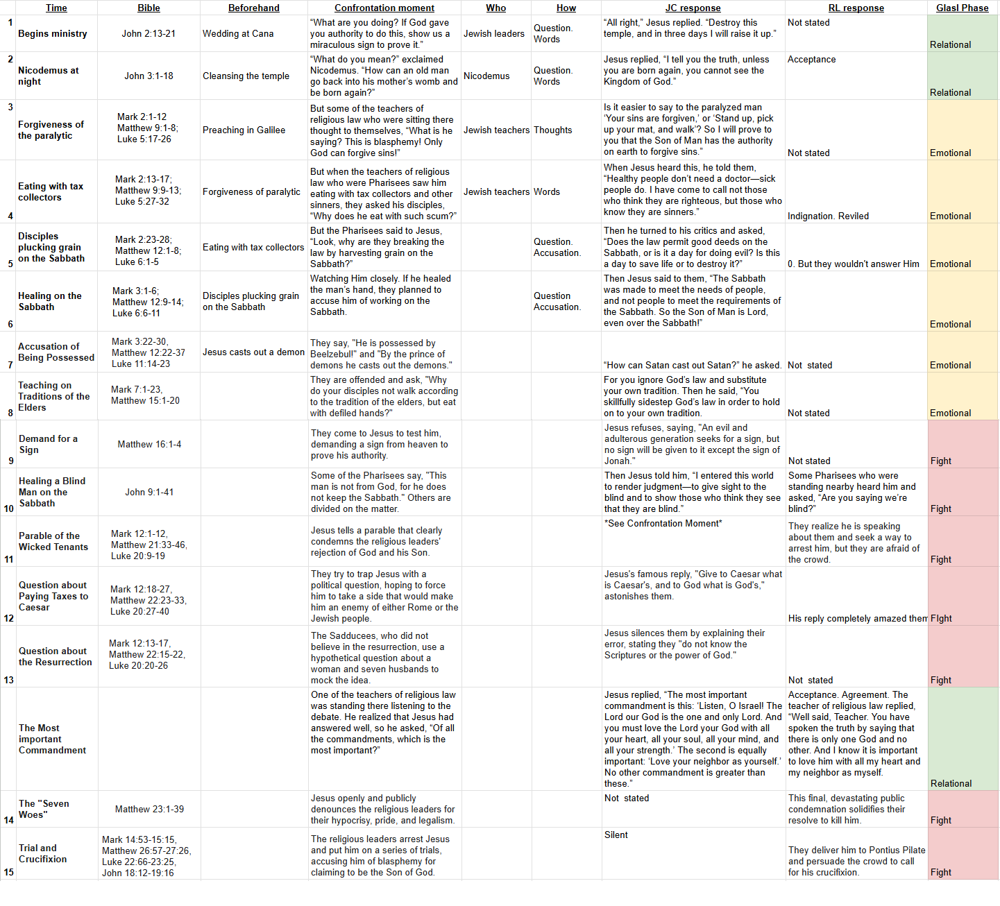
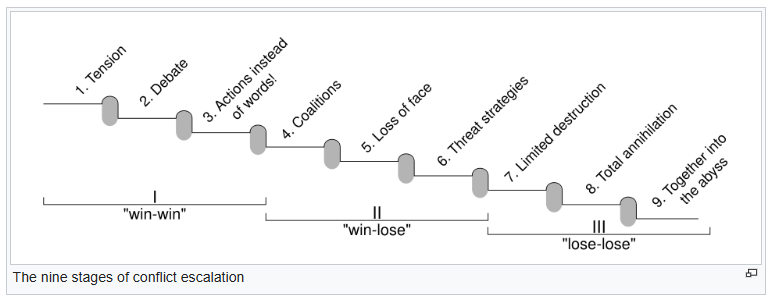
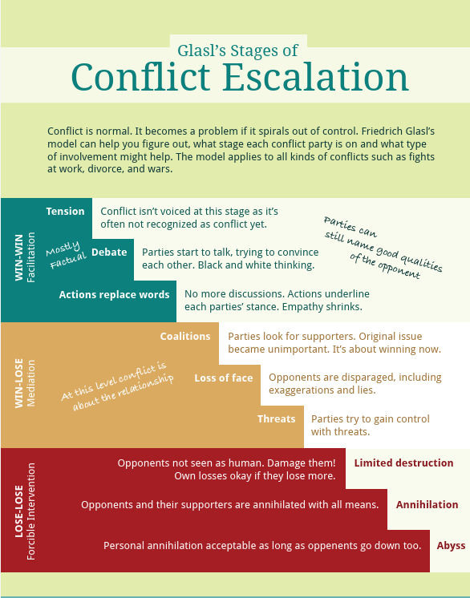

Happy BSF day! Anyone want to dig into what we just learned from the assassination of Charlie Kirk in more detail — and why it's scarier than it first seems? This escalation of hostility keeps ratcheting up to the point where it genuinely feels like the country is headed toward another civil war. Politically, a democracy built on debate, conflict, reasoning, and compromise “for and by the people” doesn't seem to work anymore.
So I went through the Bible and looked at every conflict Jesus had with the religious leaders of His day. What I found was stunning. Because Jesus was perfect, His confrontations reveal something uncomfortable: a person with the wrong motives is incapable of real reason, dialogue, or debate. They don't want mutual understanding — they want to vilify, attack, injure, or even kill whoever threatens their sinful choices or their worldly treasure. I'm not saying Charlie Kirk was perfect the way Jesus was, but watching how Jesus was ultimately assassinated by exactly this pattern says a lot about our current moment — and maybe about how we get through it.

The problem always starts in the heart of the one who won't listen. Looking into why conflicts like this escalate the way they do, I came across Friedrich Glasl's model of conflict escalation — it maps disturbingly well onto what happens once someone stops listening.


Comments